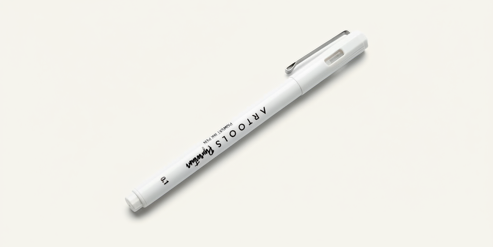
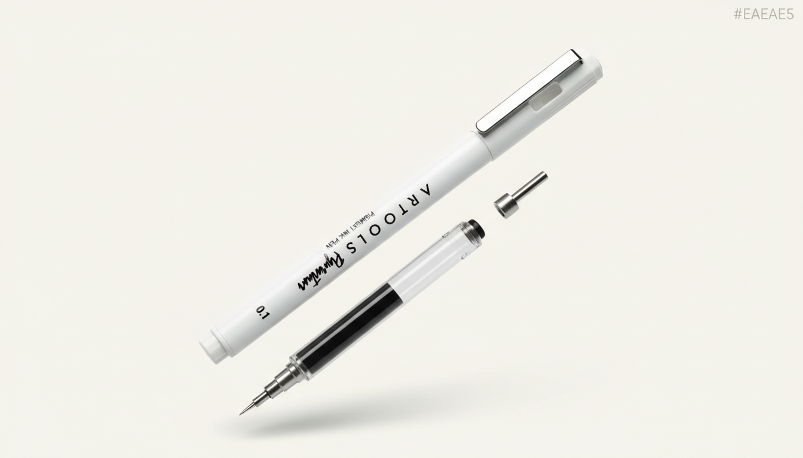

A
Caneta
mais
tecnológica
do Mundo
Precisão absoluta esculpida em metal premium. A combinação perfeita entre design atemporal e fluidez incomparável.
Design Premium
Estética Minimalista. Linhas puras esculpidas para uma experiência visual sem distrações.
Sincroniza pensamento e matéria em tempo real.

Alumínio T6
Usinada a partir de bloco único de série 7000. Lógica estrutural de aviação que minimiza torções, garantindo leveza de apenas 28g.
Engenharia Suíça
Tolerâncias atômicas ajustadas. Mecanismo auto-lubrificado entrega zero atrito auditivo e o clique mais suave do mercado.
Tinta Visco-Dinâmica
Núcleo pressurizado microchipado. O composto hidrodinâmico ajusta a viscosidade com base na velocidade vetorial do traço.
Elegância em movimento.
Além da Gravidade
Anatomia de Titânio
Geometria do Fluxo
Herança Atemporal
Escrita
sem
limites.
O cartucho de tinta pressurizado desafia a física. Escreva debaixo d'água, sobre gordura, em temperaturas congelantes ou no vácuo do espaço.

Esfera de Carboneto
Esfera acoplável ultra rija de carboneto de tungstênio. Imune ao desgaste, ela pulveriza a tinta em consistência elástica sem travar a tração térmica.
Equilíbrio Atômico
Centro de massa precisamente vetorizado e simulado em software 3D pesado. A caneta desaparece quando alojada entre seus dedos.